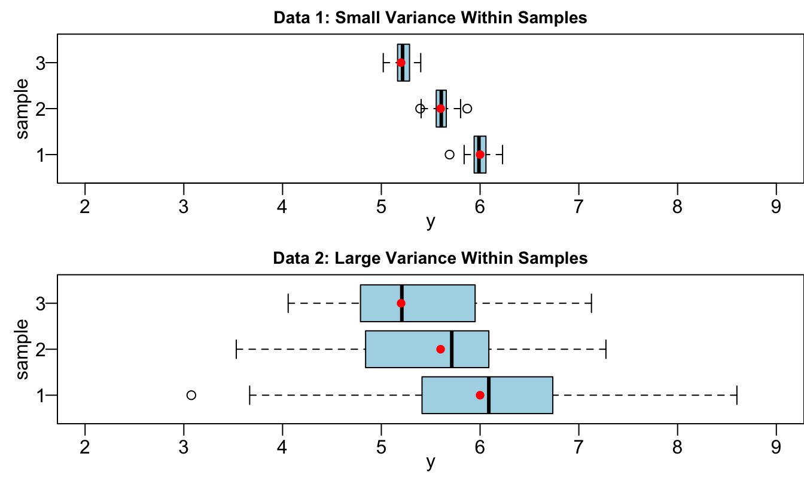
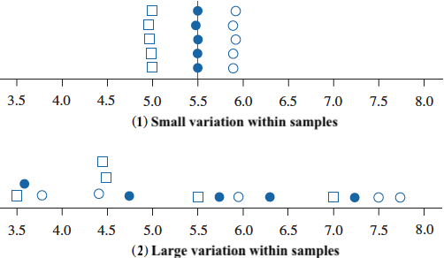
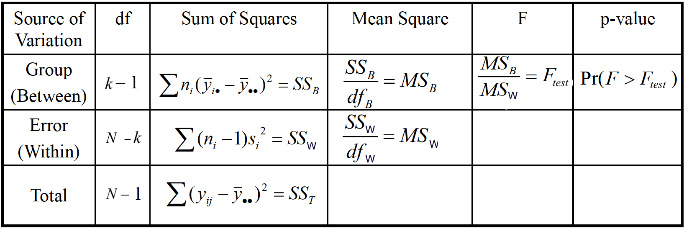
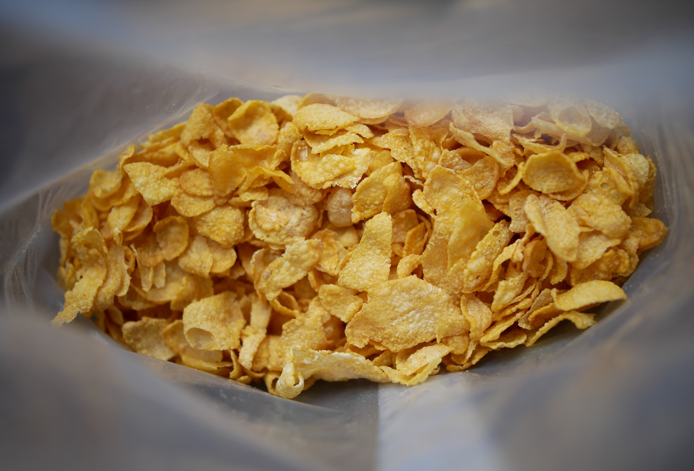
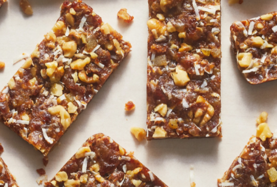
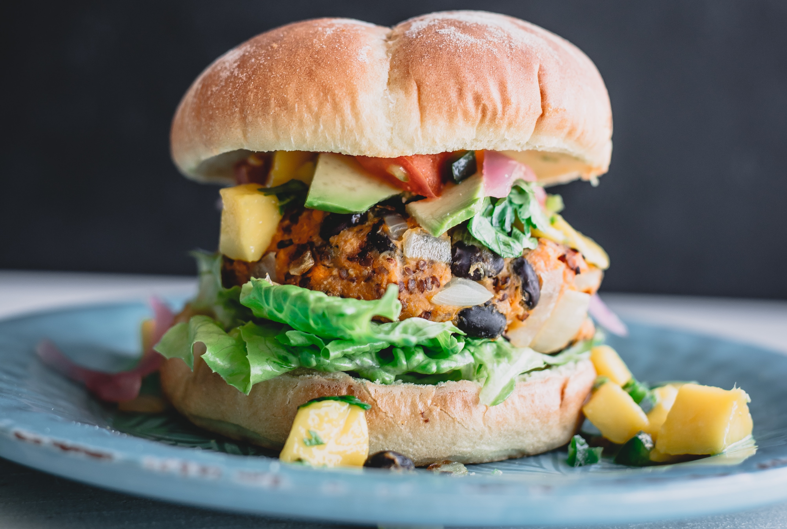
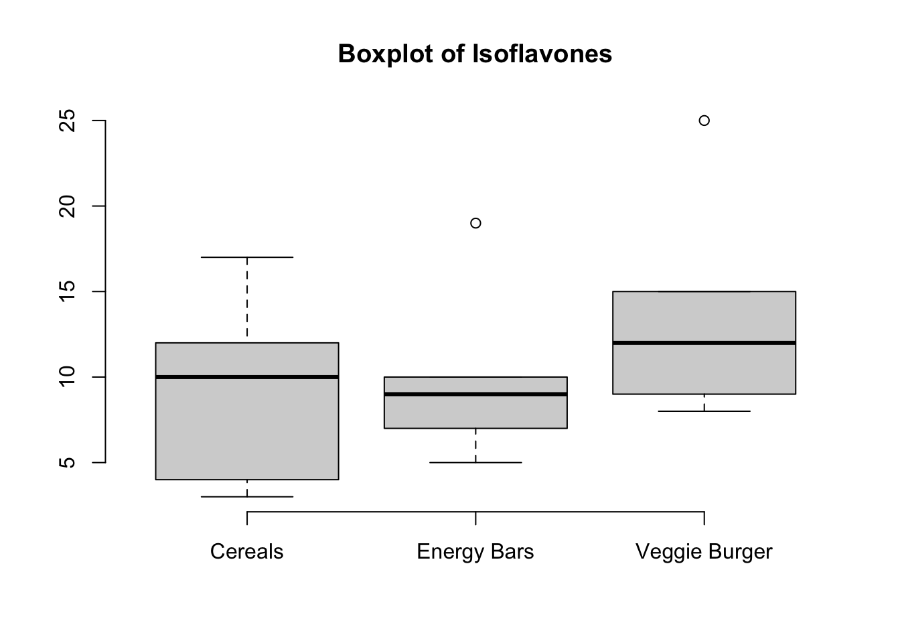
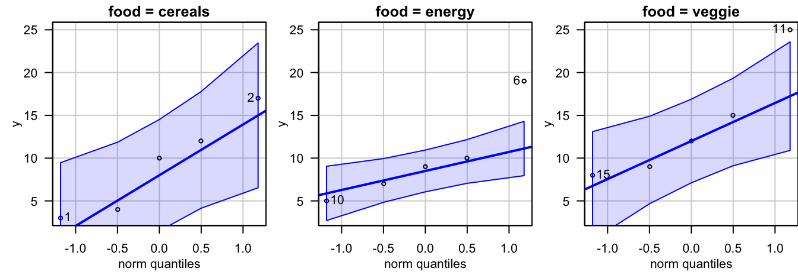

23 Analysis of Variance
This book serves as a main reference book for my MATH 4720 Statistical Methods and MATH 4740 Biostatistical Methods at Marquette University. Some topics can also be discussed in an introductory data science course. You’ll learn basic probability and statistical concepts as well as data analysis techniques such as linear regression using R computing software.
23.1 ANOVA Rationale
Comparing More Than Two Population Means
- In many research settings, we want to compare 3 or more population means.
- Are there differences in the mean readings of 4 types of devices used to determine the pH of soil samples?

- Do different treatments (None, Fertilizer, Irrigation, Fertilizer and Irrigation) affect the mean weights of poplar trees?

One-Way Analysis of Variance
- A factor is a property or characteristic (categorical variable) that allows us to distinguish the different populations from one another.
- Type of device and treatment of trees are factors from the examples previously provided.
- One-way ANOVA examines the effect of a categorical variable on the mean of a numerical variable (response).
- We use analysis of variance to test the equality of 3 or more population means. 🤔
- The method is one-way because we use one single property (categorical variable) for categorizing the populations.
Requirements
- The populations of each category are normally distributed.
- The populations have the same variance \(\sigma^2\) (two sample pooled \(t\)-test).
- The samples are random samples.
- The samples are independent of each other (not matched or paired in any way).
Rationale
- Data 1 and Data 2 have the same group sample means \(\bar{y}_1\), \(\bar{y}_2\) and \(\bar{y}_3\) denoted as red dots.
- However, they differ with regards to the variance within each group.

Variation Between Samples & Variation Within Samples
- Data 1: Variability between samples is large in comparison to the variation within samples.
- Data 2: Variation between samples is small relatively to the variation within samples.

23.2 ANOVA Procedures
- \(\begin{align} &H_0: \mu_1 = \mu_2 = \cdots = \mu_k\\ &H_1: \text{Population means are not all equal} \end{align}\)
- Statistician Ronald Fisher found a way to define a variable that follows the \(F\) distribution: \[\frac{\text{variance between samples}}{\text{variance within samples}} \sim F_{df_B,\, df_W}\]
- If the variance between samples is larger than the variance within samples (\(F_{test}\) is much greater than 1), as in Data 1, we reject \(H_0\).
Variance Within Samples
- Back to the two-sample pooled \(t\)-test with equal variance, \(\sigma^2\). We have \[s_p^2 = \frac{(n_1-1)s_1^2 + (n_2-1)s_2^2}{n_1 + n_2 - 2}\]
- ANOVA assumes the populations have the same variance such that \(\sigma_1^2 = \sigma_2^2 = \cdots = \sigma_k^2 = \sigma^2\). \[\boxed{s_W^2 = \frac{(n_1-1)s_1^2 + (n_2-1)s_2^2 + \cdots + (n_k-1)s_k^2}{n_1 + n_2 + \cdots + n_k - k}}\] where \(s_i^2\), \(i = 1, \dots ,k\), is the sample variance of group \(i\).
- \(s_W^2\) represents a combined estimate of the common variance, \(\sigma^2\).
- It measures variability of the observations within the \(k\) populations.
Variance Between Samples
\[\boxed{s^2_{B} = \frac{\sum_{i=1}^k n_i (\bar{y}_{i\cdot} - \bar{y}_{\cdot\cdot})^2}{k-1}}\]
- \(\bar{y}_{i\cdot}\) is the \(i\)-th sample mean.
- \(\bar{y}_{\cdot\cdot}\) is the grand sample mean with all data points in all groups combined.
- \(s^2_{B}\) is also an estimate of \(\sigma^2\) and measures variability among sample means for the \(k\) groups.
- If \(H_0\) is true \((\mu_1 = \cdots = \mu_k = \mu)\), any variation in the sample means is due to chance and randomness, so it shouldn’t be too large.
- \(\bar{y}_{1\cdot}, \cdots, \bar{y}_{k\cdot}\) should be close each other and should be close to \(\bar{y}_{\cdot \cdot}\).
ANOVA Table: Sum of Squares
Total Sum of Squares (SST) measures the total variation around \(\bar{y}_{\cdot\cdot}\) in all of the sample data combined (ignoring the groups): \[\scriptsize{\color{blue}{SST = \sum_{j=1}^{n_i}\sum_{i=1}^{k} \left(y_{ij} - \bar{y}_{\cdot\cdot}\right)^2}}\] where \(y_{ij}\) is the \(j\)-th data point in the \(i\)-th group.
Sum of Squares Between Samples (SSB) measures the variation between sample means: \[\scriptsize{ \color{blue}{SSB = \sum_{i=1}^{k}n_i \left(\bar{y}_{i\cdot} - \bar{y}_{\cdot\cdot}\right)^2}}\]
Sum of Squares Within Samples (SSW) measures the variation of any value, \(y_{ij}\), about its sample mean, \(\bar{y}_{i\cdot}\): \[\scriptsize{ \color{blue}{SSW = \sum_{i=1}^{k} \sum_{j=1}^{n_i} \left(y_{ij} - \bar{y}_{i\cdot}\right)^2 = \sum_{i=1}^{k} (n_i - 1)s_i^2}}\]
Sum of Squares Identity
\(SST = SSB + SSW\)
\(df_{T} = df_{B} + df_{W} \implies N - 1 = (k-1) + (N - k)\)
\(\text{Mean Square (MS)} = \frac{\text{sum of squares}}{\text{degrees of freedom}}\)
\(MSB = \frac{SSB}{k-1} = s^2_{B}\)
\(MSW = \frac{SSW}{N-k} = s^2_{W}\)
\(F_{test} = \frac{MSB}{MSW}\)
Under \(H_0\), \(\frac{S^2_{B}}{S_W^2} \sim F_{k-1, \, N-k}\)
Reject \(H_0\) if
- \(F_{test} > F_{\alpha, \, k - 1,\, N-k}\)
- \(p\)-value \(P(F_{k - 1,\, N-k} > F_{test}) < \alpha\)
ANOVA Table

23.3 ANOVA Example
- We hypothesize that a nutrient called “isoflavones” varies among three types of food: (1) cereals and snacks, (2) energy bars and (3) veggie burgers.



- A sample of 5 is taken from each type of food and the amount of isoflavones is measured.
- Is there a sufficient evidence to conclude that the mean isoflavone levels vary among these food items at \(\alpha = 0.05\)?
Data
- We prefer a data format like the one shown on the right.
data 1 2 3
1 3 19 25
2 17 10 15
3 12 9 12
4 10 7 9
5 4 5 8data_anova y food
1 3 cereals
2 17 cereals
3 12 cereals
4 10 cereals
5 4 cereals
6 19 energy
7 10 energy
8 9 energy
9 7 energy
10 5 energy
11 25 veggie
12 15 veggie
13 12 veggie
14 9 veggie
15 8 veggie
Test Assumptions
- Assumptions:
- \(\sigma_1 = \sigma_2 = \sigma_3\) (I tested it).
- Data are generated from a normal distribution for each type of food (QQ plots confirm this).

ANOVA Testing
- \(\begin{align}&H_0: \mu_1 = \mu_2 = \mu_3\\&H_1: \mu_is \text{ not all equal} \end{align}\)
- We can do all the calculations and generate an ANOVA table using just one line of code, as shown below.
anova(lm(y ~ food, data = data_anova))Analysis of Variance Table
Response: y
Df Sum Sq Mean Sq F value Pr(>F)
food 2 60.4 30.20 0.828 0.46
Residuals 12 437.6 36.47